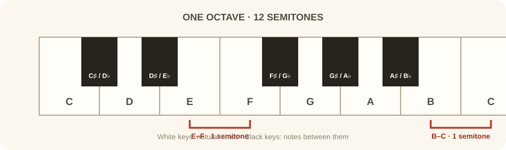
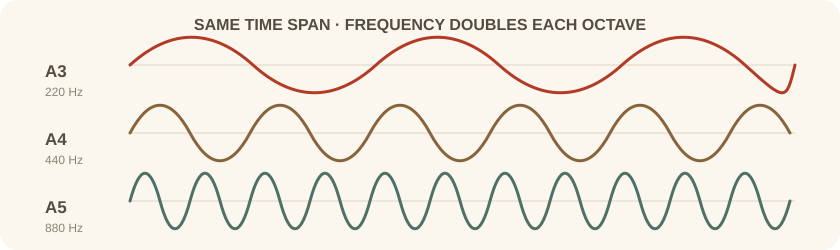
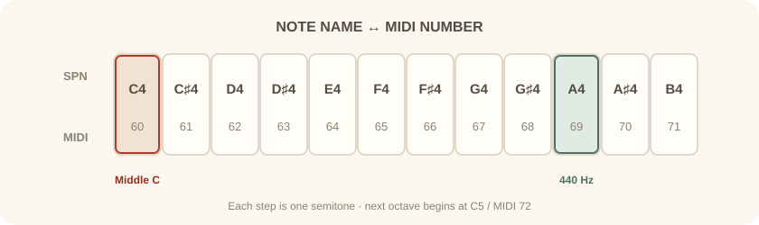

نمونهٔ آموزشی — اکتاو ۲
این الگو را در محدودهٔ اکتاو ۲ اجرا کنید:
E2 · G2 · E2 · E2 · B2 · A2 · G2
تحلیل: شمارهٔ اکتاو، محدودهٔ زیر و بمی را نشان میدهد؛ انتخاب محدودهٔ مناسب به ساز، بافت و نقش نت در تنظیم بستگی دارد.
مبانی نظری تئوری موسیقی — درس اول
بخش نخست
در موسیقی غربی، هفت نتِ اصلی با حروف الفبای انگلیسی نامگذاری میشوند؛ اما در عمل، با دوازده صدا سروکار داریم:
در الگوی نتهای طبیعی، فاصلهٔ نیمپرده میان: E–F و B–C

فاصله میان این نتها بر اساس ساختار گام دیاتونیک است و همیشه یکسان نیست:
— فاصله میان E–F و همچنین B–C دقیقا نیمپرده (Half Step) است.
— فاصله میان سایر نتهای اصلی، یک پرده (Whole Step) است؛ یعنی یک نتِ میانی بین آنها وجود دارد که همان کلیدهای سیاهِ روی پیانو آن را پر میکند.
نتهای میانی با این علامتها نامگذاری میشوند: دیز ♯ به معنای «نیمپرده بالاتر» و بمل ♭ به معنای «نیمپرده پایینتر». در نتیجه در مجموع ۱۲ نت داریم که به هر دورِ کاملِ آن، گام کروماتیک میگویند.
بخش دوم
چرا نتها پس از رسیدن به B دوباره از C شروع میشوند؟ اکتاو فاصلهای است که نسبت فرکانس دو نت در آن ۲ به ۱ یا ۱ به ۲ باشد.
از نظر فیزیکی و ریاضی، وقتی از تن C به C بعدی حرکت میکنیم، تعداد ارتعاشات صدا در ثانیه (Hz) دقیقا دو برابر میشود. این دو صدا در ارتفاع با هم فرق دارند، اما در نام نت و ردهٔ زیر و بمی یکساناند.

بخش سوم
برای جلوگیری از سردرگمی در مورد اینکه «کدام C؟»، از قرارداد رایج نامگذاری علمی زیر و بمی SPN استفاده میشود. در این سیستم هر نت با یک حرف و یک عدد مشخص میگردد؛ هر اکتاو با C آغاز و با B تمام میشود.
| اکتاو | محدوده | کاربرد |
|---|---|---|
| 0 - 2 | Sub-Bass / Bass | مناسب بیسِ سینتیسایزرها، زیرهای بیس و کیبوردِ بیس |
| 3 | Tenor / Alto | مناسب گیتار الکتریک در پوزیسیونهای پایینِ دسته، و دستِ چپ پیانو |
| 4 | Middle | شامل Middle C (دوی میانی) — در مرکز کیبورد پیانو؛ نقطه مرجعِ استاندارد در موسیقی |
| 5 - 8 | Treble / Soprano | مناسب ملودیهای اصلی، لیدِ سینتها و ویولن |

بخش چهارم
در محیطهای دیجیتال، کامپیوترها حروف و اعداد SPN را بهصورت مستقیم پردازش نمیکنند؛ بلکه از یک سیستم عددیِ پیوسته از ۰ تا 127 استفاده میشود.
| عدد | تن | توضیح |
|---|---|---|
| 0 | C-1 | پایینترین نتِ قابل ثبت در پروتکل |
| 60 | C4 | همان Middle C — مهمترین عدد، نقطه مرجع |
| 69 | A4 | فرکانس ۴۴۰ هرتز — مرجع کوک جهانی |
| 127 | G8 | بالاترین نتِ قابل ثبت در پروتکل |
فرمول ریاضی تبدیل نام نت به عدد MIDI:
در این فرمول، Semitone Offset برای C برابر ۰، برای C♯ برابر ۱، برای D برابر ۲ و الی آخر است.
بخش پنجم
چرا یک نت گاهی دو نام دارد؟ (مثلا C♯ و D♭)
این پدیده انهارمونیک نامیده میشود. در کوک مساوی، این دو نام به یک زیر و بمی و یک عدد MIDI اشاره میکنند؛ اما در نتنویسی، انتخاب نام به بافت هارمونیک و نقش نت در گام بستگی دارد. در کوکهای دیگر، دو نت همصدای انهارمونیک لزوما فرکانس یکسان ندارند.
بخش ششم
در این دو نمونهٔ آموزشی، یک الگوی نت را در دو محدودهٔ اکتاوی میبینیم. شمارهٔ اکتاوها بر اساس قرارداد SPN است؛ بعضی نرمافزارها ممکن است همان شمارهٔ MIDI را با نام اکتاو دیگری نشان دهند:
این الگو را در محدودهٔ اکتاو ۲ اجرا کنید:
تحلیل: شمارهٔ اکتاو، محدودهٔ زیر و بمی را نشان میدهد؛ انتخاب محدودهٔ مناسب به ساز، بافت و نقش نت در تنظیم بستگی دارد.
همان الگوی نتها را اکنون در محدودهٔ اکتاوهای ۳ و ۴ بنویسید:
تحلیل: نتهای دو نمونه نام نتهای یکسانی دارند، اما در اکتاوهای متفاوت اجرا میشوند؛ بنابراین ارتفاع صوت فرق میکند و رابطهٔ ملودیک ثابت میماند.
بخش هفتم
پرسش چرا بین E و F کلید سیاه وجود ندارد؟
پاسخ بر اساس الگوی فواصل گام ماژور — تمام، تمام، نیم، تمام، تمام، تمام، نیم — که یک قرارداد تاریخی و ریاضی در موسیقی غربی است و ریشه در گام دیاتونیک دارد. بنابراین فاصله بین نتِ سوم و چهارم (E و F) و همچنین هفتم و هشتم (B و C) ذاتا نیمپرده است و به نتِ میانی نیاز ندارد.
پرسش آیا استاندارد اکتاو در تمام نرمافزارهای DAW یکسان است؟
پاسخ خیر. در حالی که استاندارد علمی (SPN) تن C4 را بهعنوان Middle C با عدد MIDI 60 میشناسد، برخی شرکتها مانند Yamaha در سینتیسایزرهای خود و گاهی نرمافزار FL Studio، همان نت را با عنوان C5 نمایش میدهند. عدد MIDI همواره ۶۰ است، اما نام بصری آن در Piano Roll ممکن است متفاوت باشد؛ پس همواره عدد MIDI را ملاکِ عمل قرار دهید.
پرسش چرا در MIDI تن C-1 وجود دارد؟ آیا صدای آن قابل شنیدن است؟
پاسخ چون اعداد MIDI از صفر شروع میشوند و هر اکتاو ۱۲ نت دارد، اکتاو صفر (C0 تا B0) اعداد 12 تا 23 را اشغال میکند؛ در نتیجه اعداد 0 تا 11 به اکتاو منفی (C-1 تا B-1) تعلق میگیرند. فرکانس C-1 حدود ۸ هرتز است — پایینتر از محدوده شنوایی انسان (از ۲۰ هرتز) — و بیشتر بهصورت ارتعاش فیزیکی Sub-bass حس میشود تا یک نت موسیقی.
پیوست
در Piano Roll نرمافزار خود یک نت ایجاد کنید و عدد MIDI آن را به ۴۸ تغییر دهید. نام این نت چیست و در کدام اکتاو قرار دارد؟
یک آنالایزر طیفی (Spectrum Analyzer را روی کانال مستر قرار دهید و نتی در محدوده A3 پخش کنید. آیا یک پیک فرکانسی در حدود 220 هرتز مشاهده میکنید؟
آهنگ Smells Like Teen Spirit از Nirvana را بررسی کنید؛ ریف گیتار عمدتا در کدام اکتاوها نوشته شده است؟